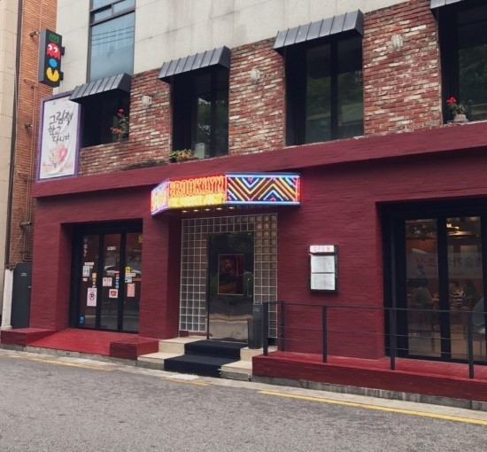
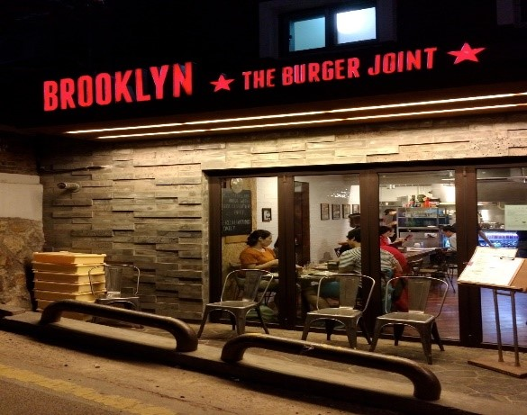
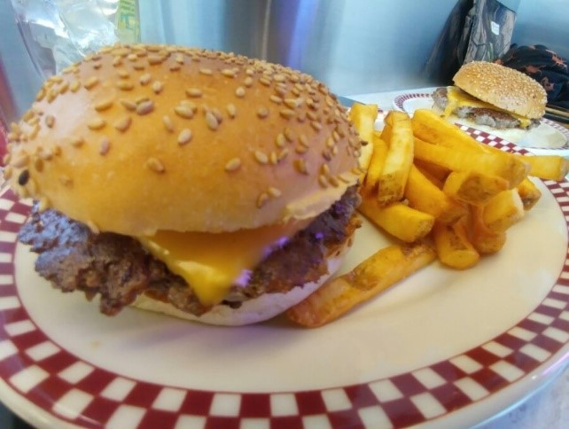

박인진 - 브루클린 더 버거 조인트
주소: 서울특별시 서초구 반포동 서래로 2길 27
Operation hours: 11:30~22:00


왼쪽 장소는 새로 지은 곳이고 오른쪽은 처음 버거집이 시작한 곳이다. 좁은 장소가 오히려 사람들을 기다리게 만들고, 이는 주위 사람들에게 “저 음식점은 뭘까” 하는 눈도장을 찍게 했다. 이것 또한 성공비결 중 하나인 듯하다. 아무리 음식점을 크게 지어도 소용없다는 것을 느꼈다.

이곳은 처음 들어가면 여기가 미국인가 싶을 정도로 미국적인(?) 요소들이 눈에 띄게 많이 배치되어있음을 볼 수 있다. 화려한 네온사인, 신나는 팝송, 미국 애니메이션 포스터 등 음식 외 외적 부분도 많이 신경 쓴 점이 인상깊다. 요즘 소비자들은 음식 맛도 맛이지만, 그 장소에서 주는 특별한 분위기도 매우 중요한 성공 요소가 되었다. 이곳의 음식 맛도 훌륭하다. 내가 평소 즐겨 먹는 버거는 ‘더 치즈버거’라는 버거이다. 위 사진이 더 치즈버거 세트의 모습이다. 주문할 때 이곳은 고기 패티를 직접 만들어서 굽기 때문에 원하는 패티 그램수를 선택할 수 있다. 개인적으로 처음 먹어볼 땐 큰 200그램 패티를 먹어볼 것을 추천한다. 큰 패티에서 나오는 육즙이 놀라울 정도로 고소하고 맛있다. 음료는 탄산뿐 만 아니라, 루트 비어, 에이드, 수많은 종류의 밀크 쉐이크, 심지어 맥주까지 판매한다. 한번 친구와 오레오 민트 밀크 쉐이크를 마셔봤는데, 한 3주치 당분을 먹은 느낌이 들 정도로 매우 달다. 하지만, 맛은 훌륭하다는 점. 맛이 맛있다면 그만큼 많은 정성이 들어갔다는 뜻이고 이는 즉 햄버거 치고 가격이 조금 부담스러울 수 있다. 가장 저렴한 더 치즈버거의 세트와 밀크 쉐이크를 먹게 되면, 16600원이 나온다. 매 한끼를 절약하는 사람들에겐 부담되는 수치다. 하지만, 하루쯤 색다른 한끼 식사를 위해 이 정도는 지출할 가치가 충분히 있다 생각한다. 한번 와서 기름진 버거와 달콤한 음료를 즐겨 보길 바란다.